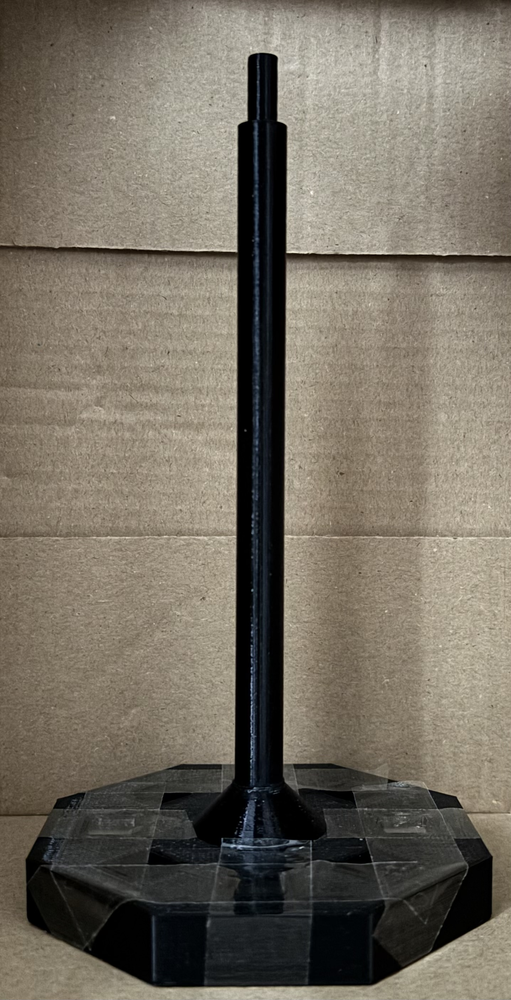
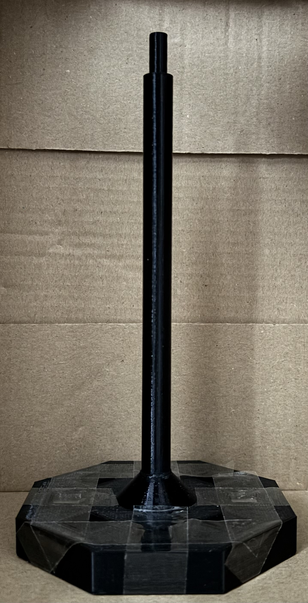

The plantemonium is divided into 3 separate parts: substratum, receptacle, and tributary, each supporting one another to ensure the plantemonium operates successfully. Discover how they operate below:
The substratum contains 4 magnets(initially 8, hence the 4 remaining empty cavities that were supposed to be for the Halbach array), which would remain fixed in their cavities and repel the magnets in the receptacle to create distance between the two components, making it levitate. In practice, due to Earnshaw's theorem, the magnets attracted each other and moved accordingly despite their fixed positions within their respective parts. This can be observed in the video on the left. The substratum also has two more features: the tube and its support structure. The tube's diameter is less than the receptacle's inner hole diameter, ensuring that the substratum and receptacle do not touch each other, so the(original) levitating effect would be properly observed. The tube also has a smaller-diameter tube at the top to connect with the tributary. The support structure was a last-minute change to the part to ensure the tube does not easily break when the plantemonium is handled; however, in practice, it acts as a physical barrier between the surfaces of the substratum and receptacle.
The receptacle contains 2 magnets(with 6 empty cavities originally for the Halbach array), which were meant to repel the magnets below but ended up attracting one another. Both sets of magnets for the substratum and receptacle were fixed facing each other with like poles.
The receptacle is divided into 2 sections, divided by a lid: a magnet container(same design as the substratum's Halbach array cavities), and a soil pot. The soil pot is a large receptacle(who'd have guessed).
The tributary is a container for a nutrient-filled solution(or water). It has an inner hole with a diameter that can hold the smaller tube from the substratum, connecting it directly to the substratum and ensuring that the receptacle is not affected by extra mass from the tributary(liquid included), which was imperative for the levitating aspect(now seemingly redundant).
The wicks are cotton ropes that are placed inside the tributary and travel down inside the receptacle. They remain in contact with liquid to deliver nutrients and water to the soil in the receptacle.
Due to Earnshaw's theorem and the support structure of the substratum, the substratum and receptacle are constrained in a fixed position. If the the receptacle is spun, it bounces due to the repulsion between the substratum. However, if kept passive, it remains in what could be described as a pseudo-levitation state. These 3 parts work together in an effort to create a self-watering, levitating(now bounce-on-demand) plant pot.
Octagonal plate: side length(40mm), thickness/height(13mm), chamfer distance from center(10mm) | Cube cavities: 10x10x10(mm). Elevation from bottom(1.5mm). Distance from edge(10mm, from midpoint of edge) | Rod: height(155mm), diameter(11mm) | Mini-rod: height(15mm), diameter(6.8mm)
Height(100mm), inner/outer octagon side length(40/45.36mm), central slot inner/outer diameter(14/18mm) | Cube cavities: 10x10x10(mm), 1.77x1.77x1(mm) cube stoppers at each corner of each cube cavity | Receptacle lid: octagonal side length(40mm), height(2.5mm), central slot diameter(18.5mm)
Bottom part: inner/outer top diameter(~78/84mm), height, including tabs(44mm), bottom diameter(20mm), inner cavity inner/outer diameter/(7/10mm), inner cavity height(15mm) | tabs: 4x2x2(mm) positioned 90 deg from each other | Top part: top diameter(32mm), inner/outer bottom diameter(~78/84mm), tab cavities(4x2)mm extruded cut
3D printing material: PETG(Receptacle(inc. lid) and tributary bottom), ABS(Substratum, tributary top) | Grade N52 neodymium magnets | Cotton self-watering wicks
 
